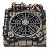

吸引サイクロン
SSR 移動
置いて2ターン後に、半径4マス以内の敵を中心へ吸い寄せる。自分も巻き込まれる。
真ん中に何を置くかが腕の見せどころ
概要
| ガチャ | 有料ガチャ：ステージ31から (第2弾, 第3弾, 第4弾, 第5弾, 第6弾) |
|---|---|
| 発動条件 | 2ターン後 |
| 範囲 | ひし形（半径4） |
| 対象 | 地上、飛行、水中 |
| 使用回数 | 1 |
| 設置場所 | 陸 |
| 由来 | 父の設計 |
| 最大レベル | 99 |
| 性質 | 範囲内の主人公にも当たる |
効果
- 引き寄せ
レベルアップの変化
| Lv | 変化 |
|---|---|
| Lv30 |
|
| Lv50 | 進化
|
| Lv60 |
|
| Lv90 |
|
レベル別の数値
ダメージはレベル（とレア度）に応じてゲームの成長式で増えます。表は実際の値です。
| Lv | 効果 | 範囲 | 使用回数 |
|---|---|---|---|
| Lv1 |
| ひし形（半径4） | 1 |
| Lv30 |
| ひし形（半径5） | 1 |
| Lv50 |
| ひし形（半径6） | 1 |
| Lv60 |
| ひし形（半径7） | 1 |
| Lv90 |
| ひし形（半径8） | 1 |
| Lv99 |
| ひし形（半径8） | 1 |
強化
レベルは罠と防具で共有する経験値（EXP）で上がります。Lv L から L+1 に必要なEXPは 5 × L です。Lv1からの累計EXP：
| Lv | 累計EXP |
|---|---|
| Lv10 | 225 |
| Lv30 | 2175 |
| Lv50 | 6125 |
| Lv99 | 24255 |